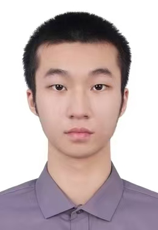

Multimodal Reasoning
Reasoning across vision, language, and other modalities for grounded understanding and generation.

Undergraduate Student
Artificial Intelligence
The Hong Kong University of Science and Technology (Guangzhou)
Hi! I am Chi Kit Wong, an undergraduate student majoring in Artificial Intelligence at The Hong Kong University of Science and Technology (Guangzhou).
My research focuses on multimodal reasoning and agentic intelligence. I am interested in building systems that connect perception, reasoning, planning, and action, especially for unified multimodal models and egocentric understanding.
Reasoning across vision, language, and other modalities for grounded understanding and generation.
Understanding egocentric observations, spatial relationships, human intent, and interaction in real environments.
Learning predictive representations of environments to support simulation, planning, and decision-making.
Developing autonomous systems that can reason, plan, use tools, learn from feedback, and act toward long-horizon goals.
Research preprints and ongoing work.
A reasoning framework that uses image editing as a bridge to inject a unified model's understanding capability into the image-generation process, enabling iterative verification and refinement of generated images.
A step-level benchmark for egocentric intent understanding that evaluates what a person is doing, why the action is being performed, and what is likely to happen next without leaking future frames.
The Hong Kong University of Science and Technology (Guangzhou)
Consortium for Mathematics and Its Applications (COMAP)
HKUST × HKUST (Guangzhou)
Greater Bay Area Outstanding Hong Kong Students Program